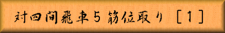

「図１」までの手順
▲７六歩 ▽３四歩 ▲２六歩 ▽４四歩 ▲４八銀 ▽４二飛
▲５六歩 ▽９四歩 ▲９六歩 ▽７二銀 ▲６八玉 ▽３二銀
▲７八玉 ▽６二玉 ▲５八金右 ▽７一玉 ▲３六歩 ▽８二玉
▲６八銀 ▽５二金左 ▲２五歩 ▽３三角 ▲５七銀左 ▽４三銀
▲５五歩
 |
|
||||
|
本章から対四間飛車５筋位取り戦法を御紹介して行く事に致します。四間飛車側が
５筋の歩を突かない場合に採用する居飛車側の作戦です。 「図１」までの手順 ▲７六歩 ▽３四歩 ▲２六歩 ▽４四歩 ▲４八銀 ▽４二飛 ▲５六歩 ▽９四歩 ▲９六歩 ▽７二銀 ▲６八玉 ▽３二銀 ▲７八玉 ▽６二玉 ▲５八金右 ▽７一玉 ▲３六歩 ▽８二玉 ▲６八銀 ▽５二金左 ▲２五歩 ▽３三角 ▲５七銀左 ▽４三銀 ▲５五歩 | |||||
| Figure 1
|
先手の▲５七銀左に対して▽４三銀と上がった後手の対抗型に▲５五歩と５筋の歩を 突いた手が中央を制圧し、振り飛車の捌きを封じようとする５筋位取り戦法の意思表示です。 「図１」から「図２」までの手順 ▽６四歩 ▲５六銀 ▽７四歩 ▲３七桂 ▽１二香 ▲４六歩 ▽４一飛 |
|||
| Figure 2
|
この▲５七銀左型での５筋位取りは、主力となる狙いが▲４六歩 ▲３七桂として次に ▲４五歩 ▽同歩 ▲同桂 ▽４四角と角を動かして▲２四歩と言う物ですが、これには ▽１ニ香 ▽４一飛と言う「図２」が四間飛車側最善の布陣です 他に「図１」では ▽４五歩と突き▲５六銀に▽４四銀と対抗する手段も有りますが、先手が４五の地点に 戦力を集中しているので、この位は逆に争点を与えて維持するのが難しいでしょう。 「図２」までの手順中で注意すべき事は、先に▽４一飛とすると▲７九角と引かれて 困る事です 必ず▽１ニ香を先にし、▲４六歩を見てから▽４一飛とします。 「図２」から「図３」までの手順 ▲４五歩 ▽同 歩 ▲２四歩 ▽同 歩 ▲４五桂 ▽５一角 ▲４二歩 ▽同 角 ▲５四歩 ▽同 銀 ▲２二角成 ▽４五銀 ▲３二馬 ▽５六銀 ▲４一馬 ▽３三角 ▲７七桂 ▽７五歩 |
|||
| Figure 3
|
この最強の布陣に前述の▲４五桂の仕掛けは無理筋となります。手順中▽４五銀を▲同銀は ▽３三角 ▲同馬 ▽同桂で後手勝勢となります。▲３二馬には思い切って▽５六銀と 飛車を見切り、以下「図３」では、やはり後手勝勢の局面です。 「図２」から「図４」までの手順 ▲４五歩 ▽同 歩 ▲同 銀 ▽４四歩 ▲５六銀 ▽６三金 ▲７九角 ▽４二飛 ▲２四歩 ▽同 歩 ▲同 角 ▽２二飛 ▲３三角成 ▽２八飛成 ▲４三馬 |
|||
| Figure 4
|
「図２」から▲４五歩 ▽同歩に▲同銀と歩交換をしておくのが先手側の正しい手段です。 これに対して▽４四歩と打ってしまうと四間飛車側は動き難い将棋となってしまいます。 高美濃の好形に進展させるのが、振り飛車の持久戦時の手段ですが、▽６三金と 上がった瞬間に４三の銀が浮き「図４」までの仕掛けが成立してしまいます。 もちろん▽４ニ飛などとすると、すかさず▲４五歩から▲４五桂の攻め筋を喰らいます。 こう言う展開が位取りに対して最も拙いのです。▽４四歩 ▲５六銀となった時点で 後手の作戦負けと言えます。この先手の攻めに対しての正しい応手は次章で。 |
|||

|
||||